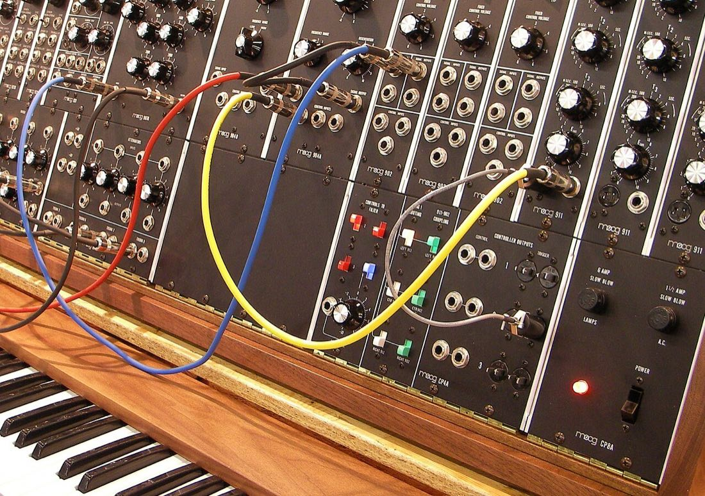
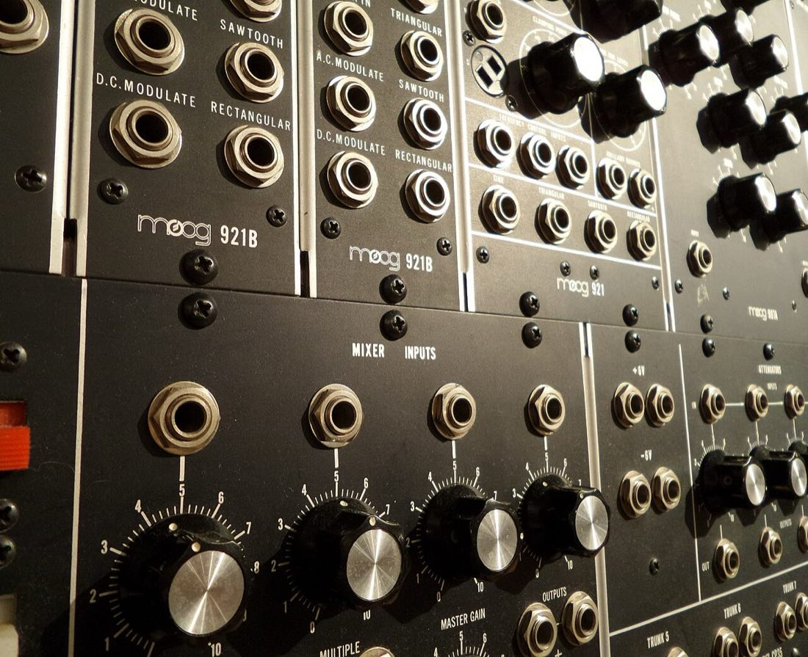

Musique & sound design

Le silence est notre matière première. L'ouverture est « liquide » : rien que la respiration de Marie. Puis chaque son raconte quelque chose. Le crissement des semelles sur le gravier. L'écho de cathédrale des crevasses. Le bourdonnement de deux secondes qui marque la fissure. Les bracelets en bois. La cloche, clong, et le bâton, toc.
Le vent est un personnage. Il siffle, presque métallique, au-dessus des crevasses. Au bord du canyon, il avale les mots : on voit les lèvres bouger, on n'entend rien, et on ne saura jamais ce que Marie voulait dire. Dans la dernière scène, il est tombé. Le silence de la voiture est le son le plus dur du film.
La musique n'existe qu'au bord du vide. Une SynthWave sombre, lourde, analogique, qui monte du ravin, mêlée à des dizaines de voix qui hurlent à l'unisson, étouffées comme derrière un mur. Pour nous, ce sont toutes les phrases qu'on n'a jamais dites. Elle surgit deux fois : au tout début, et au moment de la poussée. Les deux fois, la même coupe au noir l'arrête net.
La carte sonore du film, scène par scène.
Cinq pistes, comme sur une timeline de montage. Plus la courbe monte, plus le son est dense. Deux pics identiques, au début et à la fin : la boucle s'entend.
La même musique, deux fois. La seconde, on sait ce qu'elle annonce.
Trois couches entrent l'une après l'autre jusqu'à saturer l'espace, puis une coupe les arrête net. En scène 1, c'est l'explosion du titre. En scène 11, c'est le noir, après la poussée. Ensuite : plus jamais de musique.
Montage
Le montage, comme deux portes qui claquent.
Un prologue qui montre la fin, puis la journée dans l'ordre. Une coupe sur l'explosion pour faire entrer la couleur. Des faux raccords qui collent les deux sorties de crevasses sur le même axe. Et, à la toute fin, deux vraies portières, l'une après l'autre.
Un montage parallèle qui s'accélère jusqu'à la rupture : raccords sur la marche, raccords son sur le vent, des plans de plus en plus courts. Après, les raccords ne relient plus les duos mais Marie et Thomas, seuls, qui voient la même chose sans le savoir. Au sommet, un champ-contrechamp impossible, d'un bord à l'autre du canyon. Deux coupes au noir identiques. Et un épilogue en plans fixes, sans musique : on laisse la poussière retomber jusqu'au bout.
Une boucle : le premier plan est aussi l'avant-dernier.
En haut, la journée telle qu'elle se déroule. En bas, le film tel qu'on le monte. La scène 1 et la scène 11 montrent le même instant, en fin d'après-midi. La première fois, cadré serré. La seconde, élargi.
Deux lignes qui alternent, se synchronisent, puis n'en font plus qu'une.
Chaque bloc est un plan. Côté Marie, côté Thomas : les plans raccourcissent jusqu'à la rupture, se répondent pendant la traque, se calent à l'image près au moment de la poussée. Après le noir, il ne reste qu'une ligne, froide : celle des doubles. Ce n'est plus un couple.